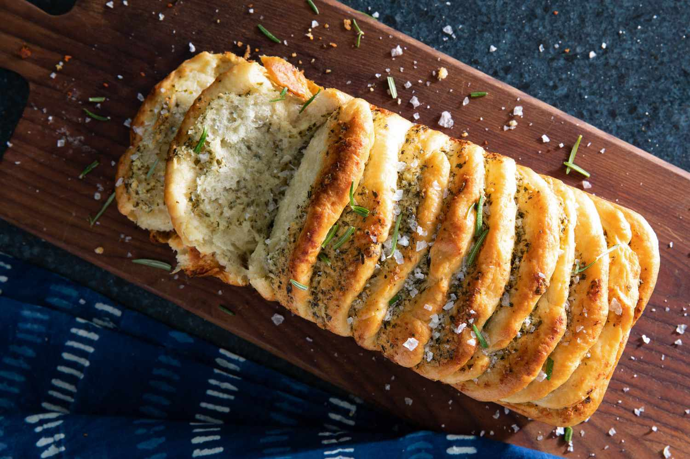

Garlic Pull-Apart Bread
Recipe courtesy of Food & Wine

Description:
A layered pull-apart bread featuring fresh rosemary, Parmesan cheese, and butter in each layer.
The dough, made from scratch, comes together easily in the stand mixer.
To maximize the yeast's rising power, keep the yeast and salt separate in the initial stages since
salt can kill yeast when they come in direct contact. Moreover, the milk should also not be heated
past 130 degrees F.
Ingredients:
Dough:
- 2 1/4 cups all-purpose flour
- 2 TB granulated sugar
- 2 tsp instant yeast
- 1 1/2 tsp kosher salt
- 2/3 cup milk, warmed
- 3 TB unsalted butter, softened
Filling and Topping:
- 6 TB unsalted butter, softened
- 3 ounces Parmesan cheese
- 2 TB fresh parsley, chopped
- 1 TB fresh rosemary, chopped
- 1 large garlic clove, grated
- 1/4 tsp kosher salt
- 1/4 tsp black pepper
- 1 TB unsalted butter, melted
- 1/2 tsp flaky sea salt
Steps:
Making the Dough:
- Place flour, sugar, yeast, and salt in bowl of a stand mixer
fitted with the paddle attachment.
- With mixer running on low speed, beat in warm milk and butter
until just combined, 30 to 45 seconds. Remove paddle attachment
from mixer; attach dough hook. Beat on medium speed until
dough is smooth and elastic, about 6 minutes. Transfer dough
to a medium bowl coated with cooking spray. Cover with plastic
wrap and let rise in a warm spot until doubled in size,
about 1 hour, 30 minutes.
Making the Filling:
- Stir together butter, Parmesan, parsley, rosemary, garlic,
salt, and pepper in a small bowl until well combined. Set aside.
Return to the Dough:
- Punch dough down in bowl and transfer to a lightly floured
work surface. Divide dough evenly into 12 pieces
(about 1 1/2-ounce; 3 tablespoons each).
- Flatten each piece into a 4-inch-round disk
(doesn't need to be perfectly round).
- Spread about 1 tablespoon filling onto 1 side of each
disk. butter and sprinkle with sea salt.
- Stack disks, cheese side up, on top of each other.
- Turn stack of dough onto its side and place in an
8 1/2- x 4 1/2-inch loaf pan coated with cooking spray.
Slightly separate disks in loaf pan. Cover with plastic
wrap and let rise until almost doubled in size,
about 45 minutes. Preheat oven to 325°F.
- Bake loaf in preheated oven until golden brown,
45 to 50 minutes, covering loosely with aluminum foil
if needed to prevent overbrowning. Transfer loaf pan to
a wire rack and let cool 10 minutes.
- Invert loaf onto wire rack, turn upright, and let cool
about 20 minutes. Brush with melted butter and
sprinkle with sea salt. Enjoy!